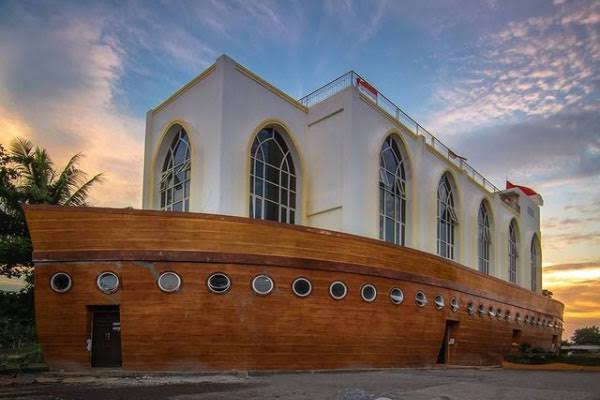
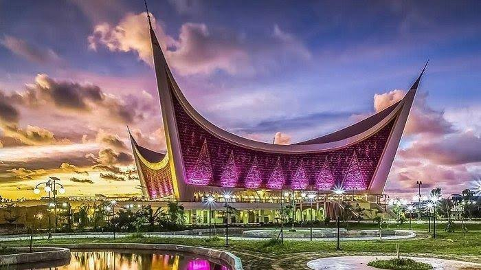
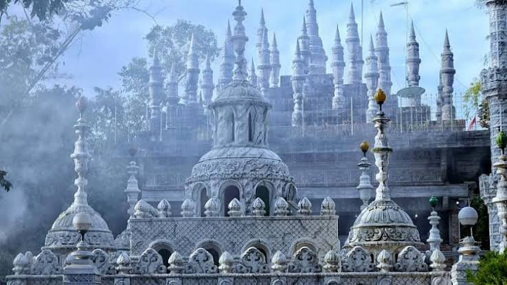
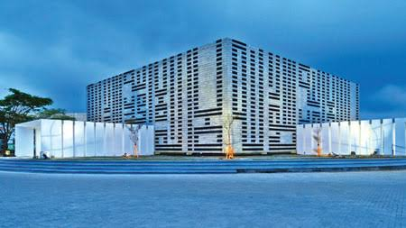
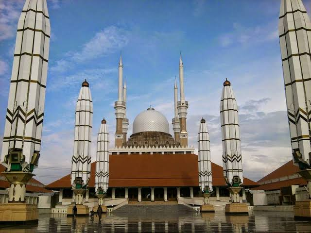

Masjid Menara Kudus

Terletak di kota Kudus, Masjid Menara Kudus atau yang memiliki nama Masjid Al-Aqsha ini memiliki keunikan karena tampak fisik gedung ini berbeda dengan gaya desain masjid pada umumnya karena memiliki arsitektur bergaya Hindu kuno.
Telah berdiri sejak jaman Majapahit, tempat ini kemudian berubah menjadi masjid ketika Sunan Kudus datang dan menyebarkan agama Islam di tempat ini. Masjid ini menjadi pilihan tepat untuk liburan dekat rumah yang layak dikunjungi.
Masjid Muhammad Cheng Ho Surabaya

Nama Laksamana Cheng Ho telah lama dikenal di dalam sejarah sebagai laksamana muslim yang taat dan murah hati.
Salah satu memorial yang berhubungan dengan beliau adalah Masjid Cheng Ho di kota Surabaya.
Keunikan bangunan terletak di arsitektur yang kental dengan gaya Tiongkok, bahkan sekilas bangunan ini sama sekali tidak terlihat seperti masjid pada umumnya. Bagi warga pendatang,
masjid ini sering menjadi salah satu spot destinasi wisata yang dikunjungi ketika musim liburan tiba karena keunikan arsitekturnya yang menyerupai kelenteng
Masjid Kapal Semarang

Berlokasi di Kyai Padak, Ngaliyan, masjid yang memiliki nama asli Masjid Safinatun Najah ini memiliki bentuk menyerupai sebuah kapal.
Arsitektur unik dan kaya akan filosofi menjadikan masjid ini juga disebut sebagai Masjid Kapal Bahtera Nabi Nuh.
Tidak hanya itu saja, masjid ini juga dikelilingi oleh kolam air, sehingga bangunan masjid seolah mengambang di atas air.
Kolam air juga berfungsi untuk membersihkan kaki jemaah sebelum masuk untuk beribadah.
Masjid Raya Sumatra Barat

Masjid yang baru rampung dibangun pada 4 Januari 2019 ini memiliki kekentalan bentuk arsitektur dan corak kultur tradisional Minang.
Terlihat dari bentuk dan lekukan khas Minang, terutama di bagian atap yang melengkung
khas Sumatra Barat tanpa kubah yang menjadikan banyak pelancong yang datang ke Kota Padang hanya untuk mengabadikan momen di masjid ini.
Masjid Tiban Malang

Terletak di Turen, Malang, masjid ini mengalahkan masjid-masjid lain karena ketinggian bangunannya. Bagaimana tidak Masjid Tiban memiliki sekitar 10 lantai, di mana lantai 1 menjadi tempat istirahat dan ruang musala, lantai 2 berisi loket, ruang istirahat, ruang makan, dan dapur, lantai 3 berisi musala, akuarium, dan kebun binatang mini. Selanjutnya lantai 4 merupakan lantai untuk keluarga pengasuh pondok pesantren, lantai 5 terdapat ruang musala, lantai 6 merupakan ruangan istirahat untuk santri, lantai 7 dan 8 berisi toko dan kios-kios milik pesantren yang dikelola oleh para santri,
lantai 9 merupakan bangunan yang didesain sebagai lereng gunung, dan lantai 10 adalah gua dan juga puncak masjid.
Selain itu, tampak depan bangunan masjid ini didominasi oleh warna biru dan putih dan tampak
megah dengan kerucut atap menyerupai mahkota runcing berwarna biru langit. Sebagai informasi dikarenakan masjid ini masih berada di lokasi Pondok Pesantren Salafiyah Bihaaru Bahri'asali Fadlaailir Rahmah,
pengelola meminta kepada pengunjung untuk mengenakan pakaian sopan di area ini dan menjaga kebersihan
Masjid Al-Irsyad Satya Kota Baru Parahyangan

Berlokasi di Padalarang, Jawa Barat, masjid ini terpilih sebagai salah satu 5 bangunan terbaik
sedunia dalam Penghargaan "The Best 5 World Building of The Year 2011 untuk kategori Bangunan Religi,
versi Archdaily & Green Leadership Award tahun 2011” dari BCI Asia. Bangunan masjid ini berbentuk kubus dengan lanskap berbentuk garis-garis melingkar mengelilingi masjid sebagai representasi dari tawaf ketika mengelilingi Ka’bah.
Pengunjung juga dapat menemukan kaligrafi tiga dimensi yang bertuliskan dua kalimat syahadat.
Masjid Agung Semarang

Dapat ditemukan di Gayamsari, Semarang, Masjid yang dikenal juga sebagai Masjid Agung Jawa Tengah ini memiliki arsitektur unik
dan termegah di Indonesia. Salah satu keunikannya adalah kompleks masjid ini memiliki payung seperti Masjid Nabawi di Makkah. Masjid dengan gaya arsitektur perpaduan antara Arab, Jawa, dan Barat ini tidak hanya berfungsi sebagai tempat ibadah,
tetapi juga menjadi objek wisata terpadu untuk pendidikan, agama, sekaligus pusat syair Islam.